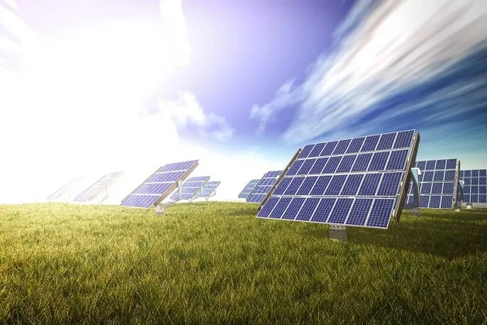
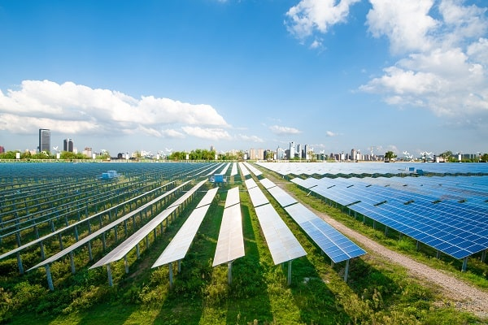

O que é Energia Solar?
A energia solar é a conversão da radiação do sol em eletricidade ou calor, ou seja, é a energia que recebemos do sol.
Utilizada como fonte de energia ou para aquecimento (energia térmica), ela é um tipo de energia renovável, limpo e inegostável, já que a fonte dessa energia pe justamente o Sol. Dadas essas caractéristicas, é uma energia que vem se firmando no topo quando falamos sobre os tipos mais comuns que vemos no dia-a-dia.
E assim como a energia eólica, é uma das formas mais limpas de produção de energia que mais cresce no mundo

Google - Image
Como funciona a Energia Solar?
A energia solar que é proveniente da luz do Sol e obtida por placas Solares, que tem como finalidade pegar essa energia luminosa e tranforma-lá em energia térmica/elétrica. E também pode ser obtida em usinas Solares, que basicamente são obtidas por inúmeros painés Solares que captam a Energia do Sol. Ela pode ser usada para produzir energia térmica usando o método de aquecimento global.
E para produzir energia elétrica diretamentem ela utiliza painés solares fotovoltaicos ou de um modo indireto que seria por meio das usinas que usam energia heliotérmica.

Shutterstock - imagem
Tipos de Energia Solar
Aquecimento Solar: A energia solar pode ser usada para aquecer água em residências, piscinas ou indústrias.

TaiyangNews - google imagem
Placas Solares Fotovoltaicas: Usadas para carregar bateria por exemplo.
lenzeletrica - imagem